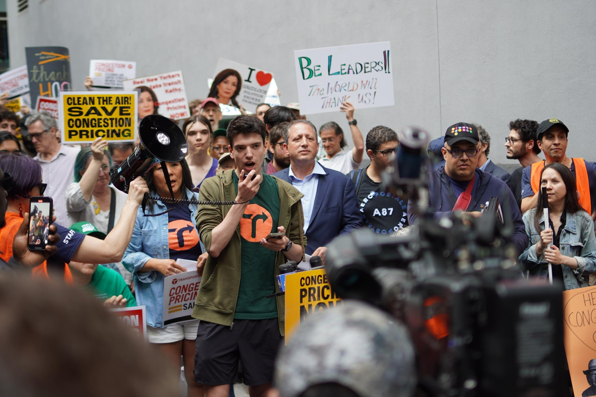

Media coverage of congestion pricing
Jan. 6, 2025
As someone who grew up my entire life in New York City without a car, I rely on public transportation and my bike to get around the city. I am a supporter of congestion pricing because I believe that it will make our streets quieter, less polluted, and safer by discouraging driving in the densest and most transit accessible part of the country. On top of this, it will provide a consistent stream of funding to improve and expand our public transportation.
I believe that a lot of the press coverage regarding congestion pricing has been misguided. This is because almost all of the coverage has been regarding what drivers think about the plan. However, the majority of New Yorkers do not own a car. This appears to me to be biased reporting. While it is true that congestion pricing would have the most direct impact on drivers, it will change the city for all of us, and that includes the majority of New Yorkers who don’t own a car.
I think that because such a large part of the population has been left out of the conversation, we have been left with problems like our governor pausing the start of the program and watering it down. In my view, when the governor changed the base price of the toll from $15 to $9, she made the plan function worse.
$9 is pennies to anyone driving into Manhattan who are typically already paying dozens of dollars in parking and tolls. By reducing the price, she has made it so that people will continue driving into Manhattan, leaving everyone unhappy. Drivers still have to pay, but are still stuck in traffic because not enough people care enough to avoid the $9 toll by taking the train.. Transit riders get less funding for improving New York’s public transportation, and our streets are still noisy and polluted.
If the media had brought more transit riders into the discussion, I believe that the governor would have been less likely to water down the plan and New York would have a better system. In the coming weeks we will see how drivers will react and what the effect will be on New York. I’m holding my breath.